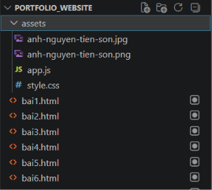

1. Mục tiêu bài tập
Rèn luyện kỹ năng tổ chức hệ thống tập tin máy tính, phân loại học liệu số, thiết lập quy tắc đặt tên tệp nhất quán, sao lưu dự phòng và truy xuất tài liệu nhanh chóng khi cần. Sản phẩm là một bộ thư mục chuẩn hóa để quản lý toàn bộ học liệu học phần Công nghệ số và AI.
2. Tóm tắt quá trình thực hiện
- Xác định nhóm tệp tin: Phân chia tài liệu thành 5 nhóm cốt lõi: bài giảng lý thuyết, bài tập thực hành, tư liệu hình ảnh/âm thanh, tài liệu tham khảo học thuật và bản nộp chính thức.
- Tạo các thư mục con theo thứ tự: Đánh số thứ tự tiền tố (
01_,02_,...) để hệ điều hành luôn sắp xếp theo đúng quy trình học tập. - Thiết lập quy chuẩn đặt tên: Sử dụng cấu trúc chuẩn
INF2501_BaiXX_TenNoiDung_v01.ext, viết liền không dấu hoặc gạch dưới, tuyệt đối không dùng ký tự đặc biệt hay tên mơ hồ. - Sao lưu dự phòng: Tạo thư mục lưu trữ dự phòng đám mây (Cloud backup) và kiểm tra dung lượng từng tệp trước khi đóng gói nộp bài.
Công cụ: File Explorer để tạo và sắp xếp thư mục; dịch vụ đám mây để sao lưu khi cần. Bài này không cần dùng công cụ AI.
Cấu trúc cây thư mục chuẩn hóa
INF2501_Portfolio_NguyenTienSon/ ├── 01_BaiGiang/ ├── 02_BaiTap/ │ ├── Bai01_TinHocCoBan/ │ ├── Bai02_TimKiemHocThuat/ │ ├── Bai03_PromptAI/ │ ├── Bai04_HopTacNhom/ │ ├── Bai05_SangTaoNoiDung/ │ └── Bai06_AI_CoTrachNhiem/ ├── 03_HinhAnh/ ├── 04_TaiLieuThamKhao/ ├── 05_BanNop/ └── README.txt
v01-v02 và tách riêng thư mục bản nộp cuối.
3. Sản phẩm cuối cùng
Cây thư mục dưới đây thể hiện cấu trúc đề xuất cho học liệu INF2501. Khi áp dụng, em dùng tên thư mục đánh số để dễ sắp xếp; tệp được đặt theo mẫu INF2501_BaiXX_TenNoiDung_v01.ext. Ảnh chân dung kèm theo chỉ nhận diện tác giả, không thay cho ảnh chụp cây thư mục trên máy.

Ảnh chụp cây thư mục dự án trên máy tính, kèm các tệp HTML và thư mục assets. Cây thư mục học phần đề xuất và quy tắc đặt tên được trình bày phía trên.
Mục tiêu của phần này là xây dựng một hệ thống lưu trữ ít sai sót, dễ tìm kiếm và dễ sao lưu khi cần làm việc với nhiều tài liệu số.